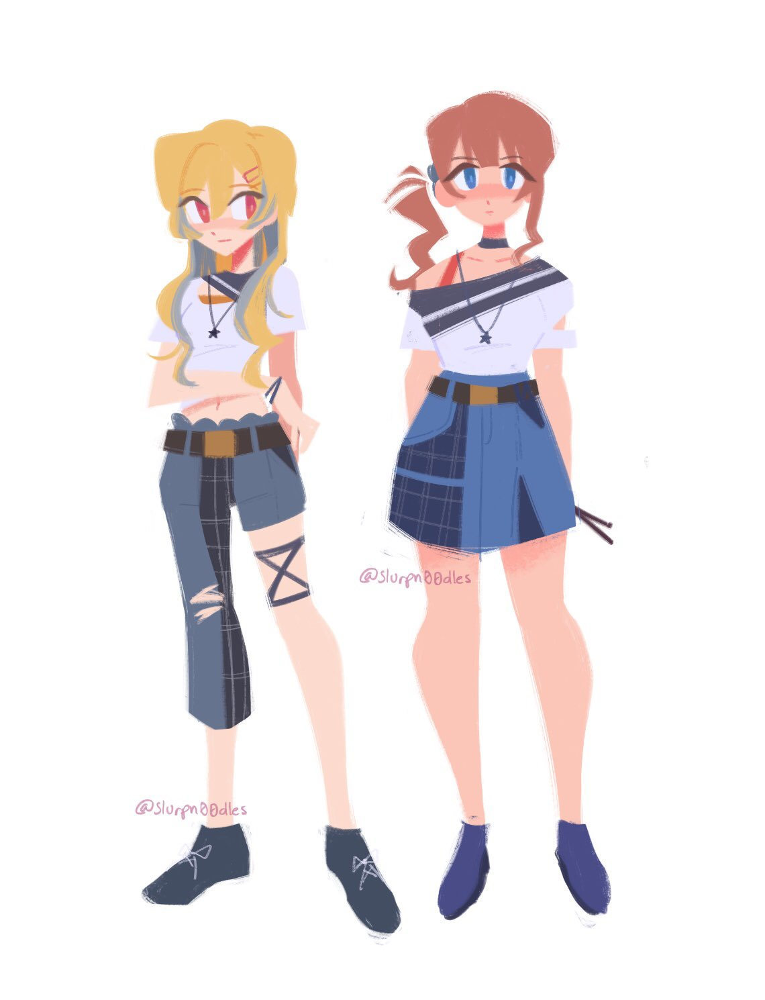
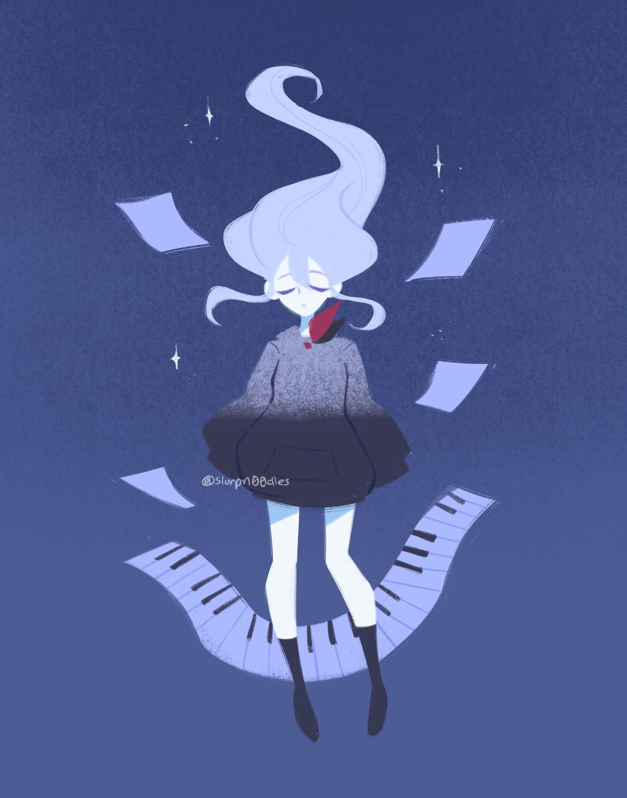
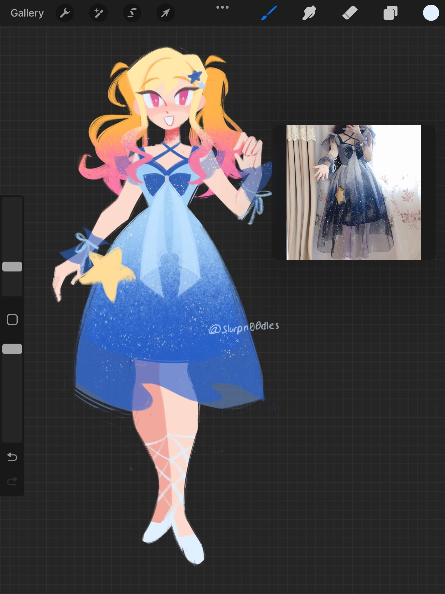
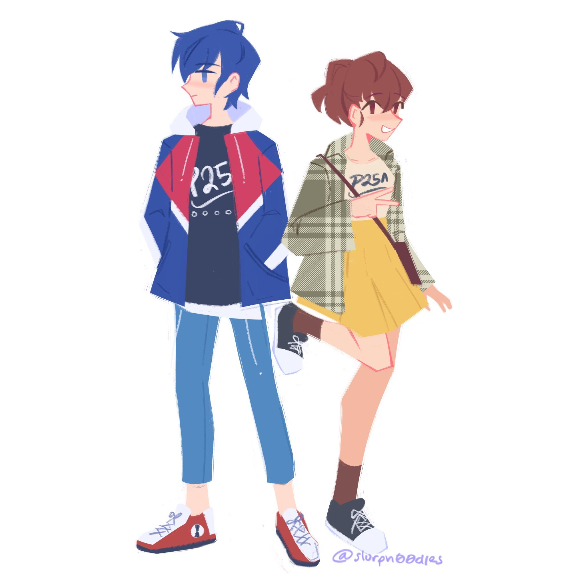
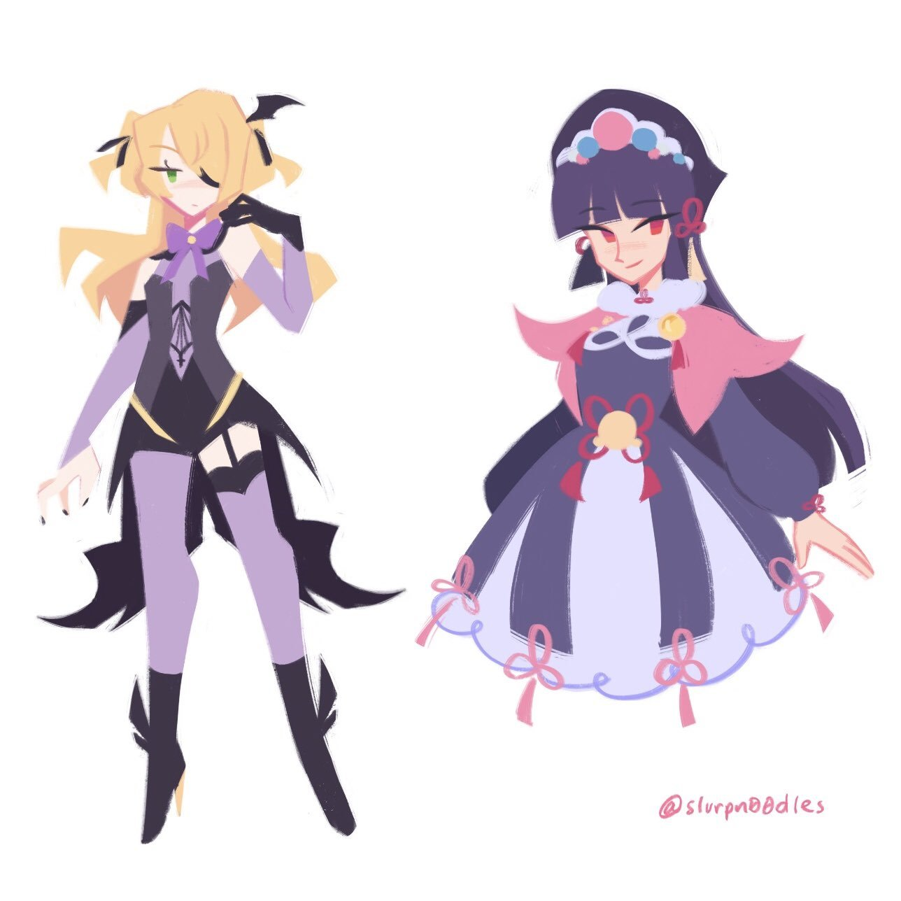

Webzines Starter
Hello all! This is my starter page. It's no surprise to you guys that I'm not a Digital Media Arts major (that's my minor, I'm a software engineering student). However, I love to draw in my free time and I have been practicing digital art on my iPad and Apple Pencil since 2019. I think I've made a pretty good amount of progress and I would very much like to continue. I love to stylize characters, use bright colors, and use strong shapes in my character art. Here's a mini-gallery of my favorite works as of late.





Also if you see my presence online publicly, no you do not. Shush.